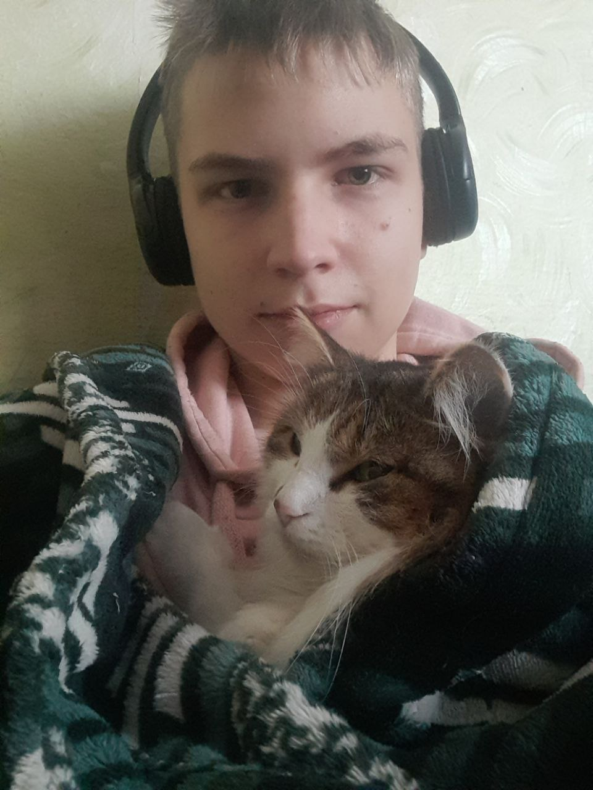
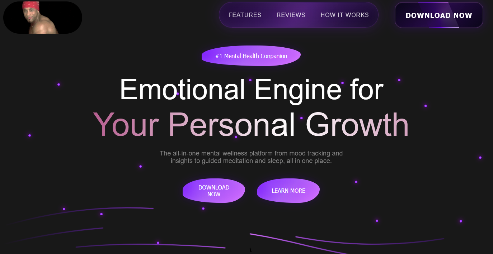
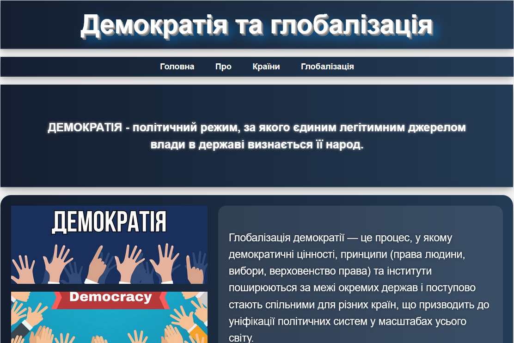
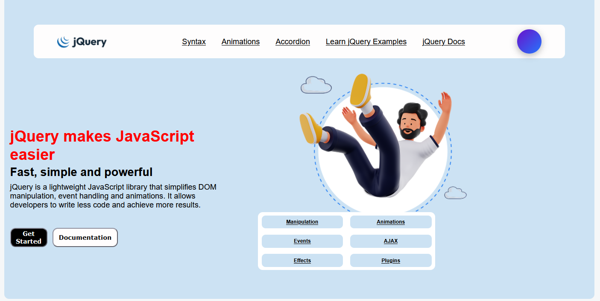

Hi, I'm

1Hi, I’m a Front-End developer focused on building clean, responsive, and modern user interfaces. I enjoy turning ideas into real, interactive web projects and constantly improving how they look and feel. I spend a lot of time thinking through structure, design, and user experience before writing code, which helps me create more stable and well-organized solutions.
HTML, CSS, JavaScript
2023React, Responsive Design, UI Development
2024 – PresentProfessional Front-End Developer
2027+I am someone who spends a lot of time thinking, analyzing, and building ideas inside my mind before turning them into reality. I enjoy imagining different possibilities, improving concepts, and breaking problems down until I fully understand them. This habit helps me when I work on programming or creative tasks, because I rarely act without thinking first.
My personality is calm, quiet, and generally friendly. I prefer peaceful environments where I can focus and work without unnecessary distractions. At the same time, I am not a simple person to fully understand — I can be intense in my thoughts, stubborn when I believe I am right, and emotionally strong in situations that matter to me. I value honesty, loyalty, and direct communication more than fake positivity.
I may not always show my emotions openly, but I am reliable when it truly matters. If someone depends on me, I try not to let them down. In difficult situations I stay present and focused instead of running away. I don’t trust people quickly, but when I do, I stay consistent and supportive.
I also enjoy learning and improving my skills, especially in web development and creative problem-solving. I like building things from scratch, experimenting with ideas, and seeing how far I can push my own abilities. For me, progress is more important than perfection.
I don’t usually prefer working in large teams, as I am more productive and focused when I work independently. I like having full control over the process, decisions, and the final result, which allows me to build projects in a more structured and efficient way.
However, when teamwork is required, I naturally tend to take on a leadership role. Throughout the year, in most group tasks and projects, I have often been the one organizing the workflow, assigning direction, and making sure everything stays on track. In around 90% of cases, I ended up acting as a team leader and handled that responsibility successfully.
Even as a leader, I try to stay supportive rather than controlling. I help others when they struggle, explain ideas when needed, and contribute to solving problems instead of just giving orders. I believe that a strong team is built not only on structure, but also on mutual respect and clear communication.
At the same time, I am selective about collaboration. I value efficiency, honesty, and shared goals. If the team is motivated and focused, I can adapt and contribute effectively, but I always perform best when there is clear direction and responsibility.
I have solid knowledge of HTML, CSS, and JavaScript. I can build responsive layouts, structure modern web pages, and create interactive UI components. I understand how to work with DOM, events, and basic browser APIs.
I am able to develop small and medium front-end projects such as portfolios, landing pages, interactive widgets, and simple web applications. I also have experience working with animations, transitions, and improving user interface design.
I understand the basics of Git and GitHub for version control and project management. I can structure projects properly, upload them to repositories, and maintain clean code organization.
I am currently improving my skills in JavaScript logic, UI design, and building more advanced interactive systems. My goal is to become a strong front-end developer capable of creating full modern web applications.
I am continuously improving my knowledge in front-end development, focusing on JavaScript in depth. I try to understand not only how things work, but also why they work, which helps me build more stable and scalable solutions.
At the moment, I am practicing more advanced JavaScript concepts, working with DOM manipulation, events, and improving my logic skills. I also experiment with building small interactive projects to strengthen my understanding through practice.
I am also developing my UI and design sense, learning how to create better user experiences, improve layout structure, and make interfaces more intuitive and visually balanced.
My main goal is to become a strong front-end developer who can build real, production-level web applications. I focus on constant progress, improving step by step instead of rushing, and building a solid foundation of skills.

A web tool that generates abstract wallpapers by analyzing image colors and arranging them into structured mosaics. The system sorts pixels by dominant colors and builds visually balanced patterns automatically..
GitHub
A neural network implemented from scratch in Python without external ML frameworks. Includes forward propagation, backpropagation and weight adjustment logic to demonstrate how learning works internally.
GitHub
A 3D rendering system with realistic light simulation and ray tracing algorithms.
GitHub